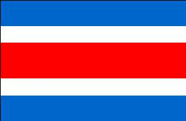
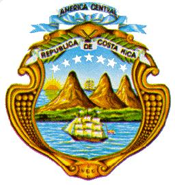

Costa Rica
|  |  |
Información general
Nombre oficial: República de Costa Rica
Área: 51 100 km²
Costas: 1 290 km
División política:
División política: 7 Provincias
Provincia Capital
- Alajuela Alajuela
- Cartago Cartago
- Guanacaste Liberia
- Heredia Heredia
- Limón Limón
- Puntarenas Puntarenas
- San José San José
Unidad monetaria: Colón costarricense
1 Colón costarricense = 100 centavos
Idiomas: Español (oficial); como en otros países de América Central, en el litoral caribeño de Costa Rica se habla el inglés (no oficial)
Fiesta nacional: 15 de septiembre, Independencia
Gentilicio: Costarricense
Hora oficial: GMT -6 horas (normal/verano)
Miembro de: ONU, OEA, ALADI (observador), MCCA
Curiosidades
El volcán Poás de 2 737m de altitud situado en la provincia de Alajuela, tiene un cráter de 1, 6 Km de diámetro donde se destacan dos lagunas, una de aguas puras y frías rodeadas de vegetación y la otra, a más profundidad, está formada por materias ígneas siendo considerado el géiser más grande del mundo, del cual se levantan chorros a más de 100 m de altura.
La playa del Tortuguero en el litoral del Caribe costarricense, es el nido y refugio más grande de la tortuga verde en el Hemisferio Occidental.
Información adicional en Internet.
Perfil Ecónomico
Perfil Demográfico
Población: 3.810.179 hab.
Densidad de población: 75 hab/km²
Fuente: http://www.inec.go.cr/
Perfil Cultural
Alfabetismo: 96 %
Religión:
- Católicos: 86,8%
- Protestantes: 6,0%
- No religiosos: 2,9%
- Anglicanos: 0,2%
- Budistas: 0,1%
- Judíos: 0,1%
- Otros: 3,9%
Algunas figuras notables:
- José M. Alfaro (1861-1939).Escritor, poeta y Académico de la Lengua
- Roberto Brenes Mesén (1874-1947). Escritor y pedagogo
- Rafael Cardona (1892-1973). Escritor, poeta y ensayista
- Lisímaco Chavarría (1878-1913). Poeta y literato
- Aquileo J. Echeverría (1866-1909). Escritor, poeta, cuentista y periodista
- Ricardo Fernández (1867-1950). Escritor, cronista e historiador
- Joaquín García Monge (1881-1958). Escritor y periodista
- Max Jiménez (1900-1947). Escritor, poeta, escultor y pintor
- Carmen Lira (1888-1949). Escritora
Lugares declarados patrimonio mundial por la UNESCO
- Reservas de la Cordillera de Talamanca-La Amistad (compartido por Costa Rica y Panamá).
- Parque Nacional La Amistad (compartido por Costa Rica y Panamá).
Sistema de Gobierno
Constitución vigente: 7 de noviembre de 1949 (Última modificación 2006)
Sistema ejecutivo: Presidente y dos Vicepresidentes, elegidos por sufragio universal directo de adultos, para un período de cuatro años y no reelegibles.
Sistema legislativo: Asamblea Legislativa (cincuenta y siete miembros, elegidos por sufragio universal directo para un término de cuatro años).
Sistema judicial: Corte Suprema de Justicia (veintidós miembros elegidos por la Asamblea para un término de ocho años, reelegibles automáticamente, a menos que la Asamblea decida lo contrario), tribunales inferiores, de trabajo, electoral.
Gobierno subdivisional: Cada provincia tiene un gobernador nombrado por el Presidente. Se dividen en cantones (con consejos municipales elegidos) y distritos. Los gobiernos municipales se regulan por las leyes nacionales.
Aproximación histórica
Costa Rica después de El Salvador, es la menor de las repúblicas centroamericanas, limita al norte con Nicaragua, por el nordeste con el mar de las Antillas y al este con Panamá. Tiene costas con el Océano Pacífico.
Descubierta por Colón, en su cuarto viaje en 1502, fue incorporada a la Capitanía General de Guatemala independiente.
En 1821, formó parte del imperio mexicano de Iturbide y en 1823 de las Provincias Unidas de Centro América, de las que se separó en 1838 proclamando su independencia en 1848.
Recorrida por una doble cadena montañosa, la Sierra Madre forma una meseta central de unos 3 000 kilómetros cuadrados que es el principal asiento de la población. Hacia las costas hay bosques tropicales; en las cordilleras abundan los conos volcánicos como el de Poás. El clima es predominantemente tropical, con abundantes lluvias, caliente y húmedo en las costas caribeñas y tierras bajas y frío en las regiones montañosas. En las fértiles tierras de la meseta se cultiva el café, uno de los productos principales de la agricultura costarricense.
En su economía predomina la agricultura y entre los principales cultivos, el café y los bananos.
Su capital es San José de Costa Rica, cuyos orígenes se remontan a 1751.
«-- ir al comienzo
«-- regresar